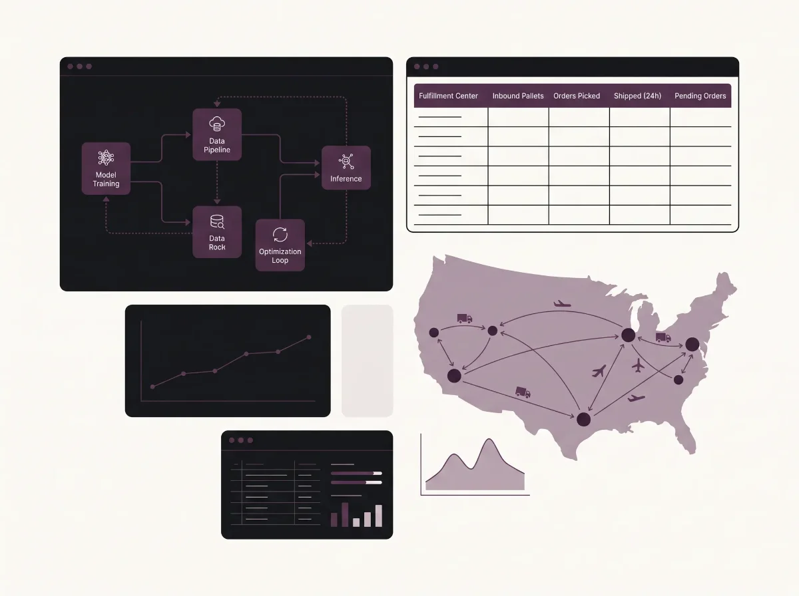
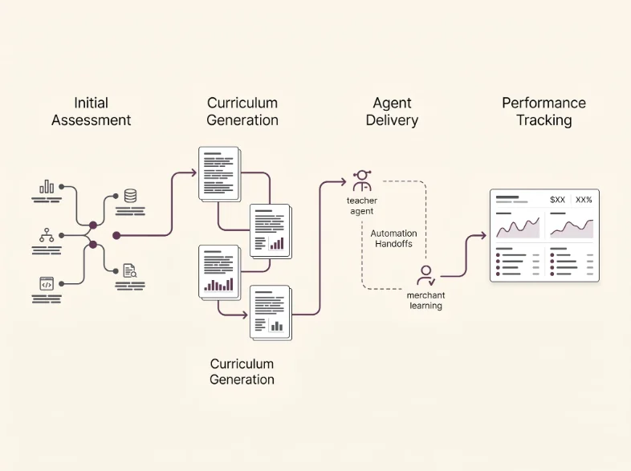
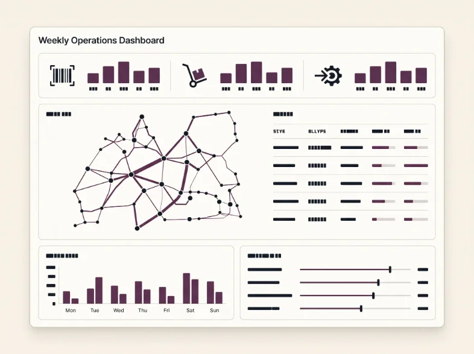
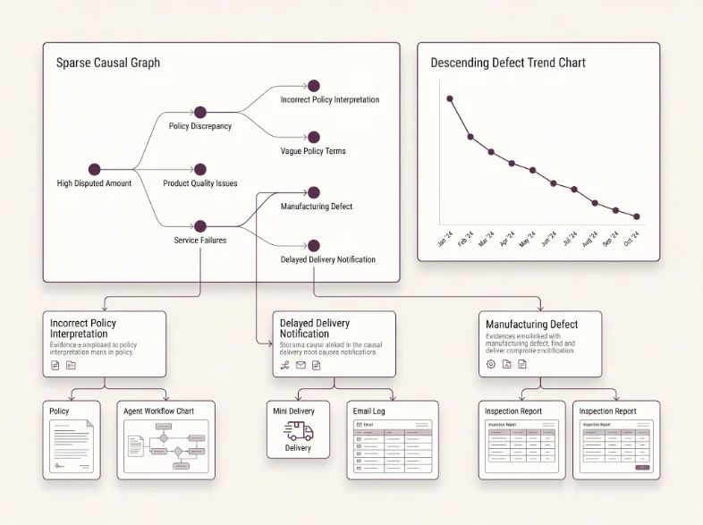

I own B2B vertical strategy at ShipMonk and personally build the AI systems that execute it — including a Claude-based multi-agent pipeline behind an 82% merchant chargeback reduction. Earlier: a $99M infrastructure launch and a 10x station scale-up at Amazon.

I turn operational complexity into clear product roadmaps, data systems, and durable operating mechanisms — then build the teams that make the improvement stick.
Market opportunities, roadmaps, and 0–100 initiatives
Forecasting, labor planning, quality, and cost efficiency
Practical tools that remove manual work and surface decisions
Aligned teams across product, operations, engineering, and partners
$25M+
Cumulative cost savings
10×
Scale within one year
82%
Chargeback reduction
$99M
Project launch led
ShipMonk
Oversee strategic expansion of B2B e-commerce for SMEs, identifying new revenue streams, scaling infrastructure, and driving the product roadmap across 0–100 initiatives.
Amazon
Oversaw strategic operations across multiple last-mile delivery stations, led multimillion-dollar infrastructure and expansion projects, and drove automation to reduce defects.
HPCL
Led large-scale supply chain, logistics, infrastructure, sustainability, and asset-utilization initiatives at one of India's largest public sector energy companies.
Nestlé Purina
Led a cross-functional team of seven on a six-month product vision engagement, directing market research and delivering data-driven recommendations for the Pet Finder platform.

Automates merchant onboarding education with multi-agent orchestration, content personalization, and progress tracking.

Production BI system surfacing OTRS, OTS, pick/pack audit, and late-order data across 10+ warehouses weekly.

AI-assisted root-cause analysis across Snowflake, PostgreSQL, and EDI compliance data that contributed to an 82% chargeback reduction.
Curated non-technical LLM apps for productivity, creativity, health, and finance, with beginner-friendly setup guides.
Self-hosted AI stack connecting Ollama, Open WebUI, n8n, Docker MCP Gateway, and Tailscale.
Real-time Claude API usage monitor for Windows with session and weekly quota views.
Python automation on the Asana API analyzing go-live patterns across 200+ wholesale merchants.
Reusable SQL pattern library that standardizes dashboard building for distributed warehouse analysts.
Google Apps Script tool standardizing B2B packing configurations and eliminating manual setup time.
MBA
Washington University
Merit-Based Scholarship
B.S. Electronics & Communications Engineering
Allahabad University
Merit-Based Scholarship
Director/Principal roles in Strategy & Operations, Chief of Staff, and Technical Program Management — especially at AI-native companies.